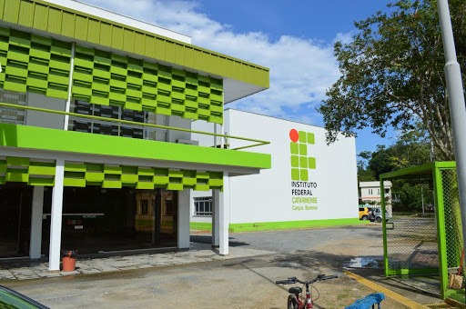
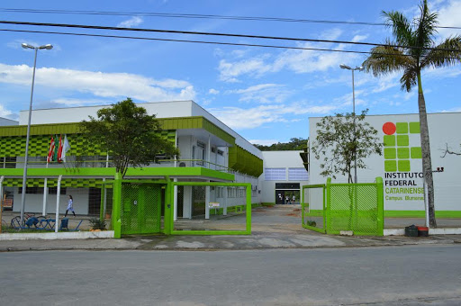
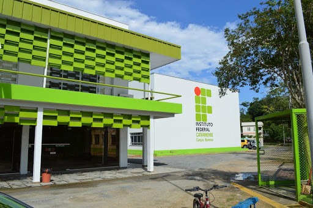
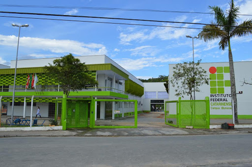

 
Em primeiro plano, a principal razão para o desenvolvimento desse sistema é o atual cenário da
pandemia mundial do coronavírus que coagiu as pessoas a reformular e a reinventar o jeito de fazer
as coisas devido ao distanciamento social.
Uma dessas realidades foi a doação de sangue, especialmente o agendamento que precisa ser feito
remotamente e possuir um intervalo entre os horários para evitar a aglomeração de pessoas no mesmo
recinto. Assim, o sistema será capaz de realizar os agendamentos e, como é necessário possuir um
cadastro, o doador também conseguirá fazê-lo remotamente através do mesmo, dentre outras funções que
visam melhorar o processo da doação nesse período de distanciamento.
- Sangue A: é um dos tipos mais comuns e contém anticorpos contra o tipo B, só podendo receber sangue de
pessoas do tipo A ou O.
- Sangue B: é um dos tipos mais raros e contém anticorpos contra o tipo A, só podendo receber sangue de
pessoas do tipo B ou O.
- Sangue AB: é um dos tipos mais raros e não possui anticorpos contra A ou B, o que significa que pode
receber sangue de todos os tipos.
- Sangue O: é conhecido como o doador universal, possui anticorpos anti-A e anti-B, só podendo receber
sangue de pessoas do tipo O.
Em primeiro plano, a principal razão para o desenvolvimento desse sistema é o atual cenário da
pandemia mundial do coronavírus que coagiu as pessoas a reformular e a reinventar o jeito de fazer
as coisas devido ao distanciamento social.
Uma dessas realidades foi a doação de sangue, especialmente o agendamento que precisa ser feito
remotamente e possuir um intervalo entre os horários para evitar a aglomeração de pessoas no mesmo
recinto. Assim, o sistema será capaz de realizar os agendamentos e, como é necessário possuir um
cadastro, o doador também conseguirá fazê-lo remotamente através do mesmo, dentre outras funções que
visam melhorar o processo da doação nesse período de distanciamento.
Objetivos
- Apresentar maiores informações acerca da doação de sangue.
- Facilitar o cadastro, remoção, atualização e consulta do doador.
- Agilizar o agendamento, remoção, atualização e consulta da doação via internet.
- Facilitar a comunicação do doador com o centro de doação disponibilizando informações para contato.
- Informar aos doadores que seu tipo sanguíneo está em falta no estoque e solicitar que estes se
encaminhem até o banco de sangue para a doação.
- Agilizar o processo de pré-triagem ao disponibilizar as possíveis perguntas realizadas pelo médico
avaliador para que o doador já esteja ciente delas.
Justificativa
O desenvolvimento de novas metodologias que adaptam práticas pré-existentes nos centros de doação de
sangue vem se mostrando cada vez mais comum e de extrema importância. Dessa forma, perante a necessidade
de agilizar o processo de doação de sangue de forma eficaz e segura, devido à pandemia da COVID-19,
faz-se necessário adaptar as práticas atuais dos centros de doação de sangue, como a falta de informação
a respeito das doações, bem como o agendamento destas e o cadastro de doadores.
Portanto, é indispensável fornecer um melhor entendimento acerca da transfusão de sangue, auxiliar e
agilizar o agendamento da mesma e possibilitar que o futuro doador faça seu cadastro no conforto de sua
casa, consequentemente evitando sobrecarga no atendimento e aglomerações na fila de espera. Ademais, é
necessário informar os doadores a respeito da importância da doação, bem como das condições em que ela
pode ser realizada, a fim de evitar a desinformação e a ocupação de horários em vão. Assim, será possível
facilitar o entendimento acerca desses temas, agilizar o agendamentos de doações e o cadastro de doadores,
além de auxiliá-los através do formulário de contato e evitar transtornos.
Nossa equipe

